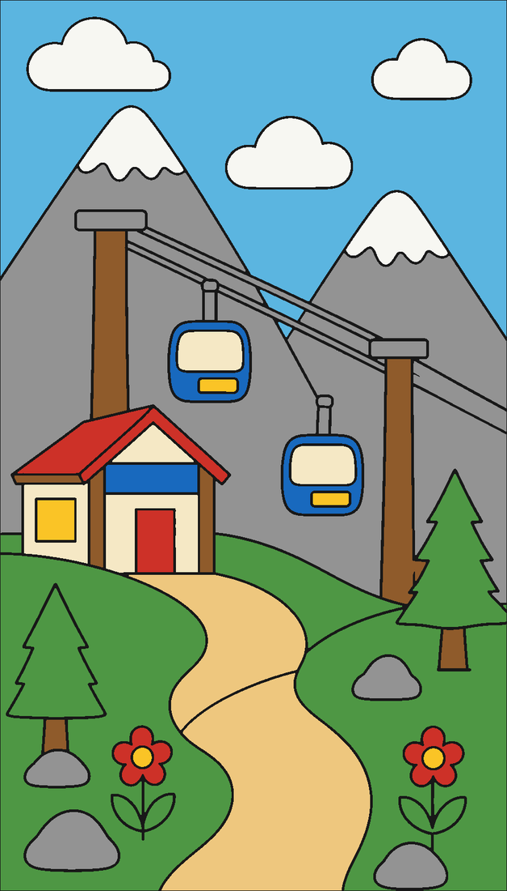
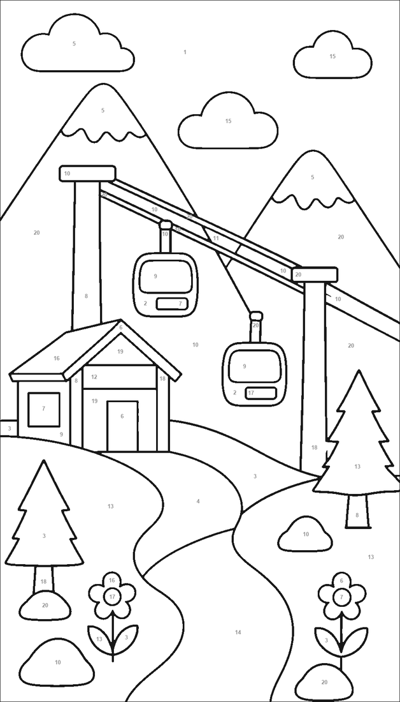

Punchline Math
Solve → decode → reveal the punchline. Every answer maps to a decoder chunk and a numbered ticket, so students self-check while showing work. Ships with a fully worked teacher key.
Instructional Designer · Curriculum Developer · eLearning
Real Engagement with Mathematics (REM) is my proof of craft: a six-phase Algebra 1 lesson engine, reusable practice-asset systems with paired teacher keys, and a visual design language that stays coherent across an entire course.
11+ years secondary math · ADDIE · GRR · UDL · Mayer · Storyline · Canvas · HTML/CSS


Lesson architecture
Teachers learn a single instructional rhythm; content authors fill the slots. Every REM lesson runs the same six phases, so quality scales without reinventing pedagogy per topic.
A hook with instructional purpose — story context, prior-knowledge trigger, or a puzzle that makes the day's math worth solving.
Worked examples that show thinking, not just steps — visible checks, inverse-operation reasoning, and representation choices.
Structured practice with immediate self-verification: decoders, keyed regions, and arrival signals that confirm or redirect.
Independent and collaborative work inside a repeatable interaction grammar — stations, partner loops, casebooks.
Built-in reflection prompts and error audits so learners consolidate the decision that mattered, not just the answer.
Planned enrichment and transfer inside the same architecture — no "early finishers get busywork."
Reusable instructional asset systems
Each format encodes a learning interaction — self-checking, visual reinforcement, movement with accountability, misconception analysis. Same grammar, swapped mathematics.
Solve → decode → reveal the punchline. Every answer maps to a decoder chunk and a numbered ticket, so students self-check while showing work. Ships with a fully worked teacher key.

Twenty numbered regions keyed to answers — every crevice labeled, whole scene painted on the teacher key. Practice stays rigorous while the picture verifies the math.

Movement with accountability: solve at a station, follow your solution to the matching arrival signal, close the loop. Wrong answers dead-end — the route itself is the feedback.

Mistakes as objects of study — students find the flawed step, correct it, and explain why. Diagnostic noticing built into a repeatable casebook template.
Design for the teacher, too
Not an answer list — a facilitation document. Each solution is worked, checked by substitution, and mapped to its decoder chunk, so a teacher can diagnose where a student's route went wrong.
Instruction in motion
Short-form modeling videos produced for the REM system — worked examples paced for a vertical screen, with the same visible-check habits the print materials teach.
How a lesson flows
Solving one-step equations, walked through the REM architecture with the actual pages a class would use — from course map to assessment.

Situate The course roadmap places the lesson in its unit, benchmark, and product format.
Activate A story-driven launch gives the math a job: every correct solution repairs a system.

Model Worked-example visuals make the relationship visible before practice begins.
Guide Self-checking practice: solve, decode the chunk, place the ticket — feedback without waiting.
Apply Station cards send solutions to arrival signals; the closed loop is the accountability.

Reinforce Answer-keyed regions turn correct work into a finished scene — rigor with visual verification.
Verify The worked teacher key lets the teacher diagnose any route in seconds, not re-solve it.

Check A formative engine with shared response structures carries evidence across lessons.

Assess Blueprint-aligned performance tasks close the loop from architecture to evidence.
Selected work
Analysis, design decisions, and artifacts — how REM lesson craft translates to instructional design work.

The six-phase lesson engine plus four reusable practice systems — Punchline Math, Color By Number, Scavenger Hunt, Error Analysis Detective — with paired teacher keys and a coherent visual design system.
View curriculum case study →
Storyline interaction design: worked examples, formative checks, and teaching feedback — diagram sequences and parallel REM patterns shown.
View case study →
Blueprints, item banks, district assessment contribution, and formative design inside REM practice engines — evidence of learning, not busywork.
View case study →
Facilitated PD and mentor support framed as adult learning design: clear outcomes, active practice, and transfer into daily instructional work.
View case study →Also available: AI-enhanced instructional design workflow — AI as a drafting partner under human judgment.
Capabilities
Grounded in learning theory and built with tools teams actually use.
Open to instructional design, curriculum development, and eLearning roles in edtech, higher education, and corporate L&D.